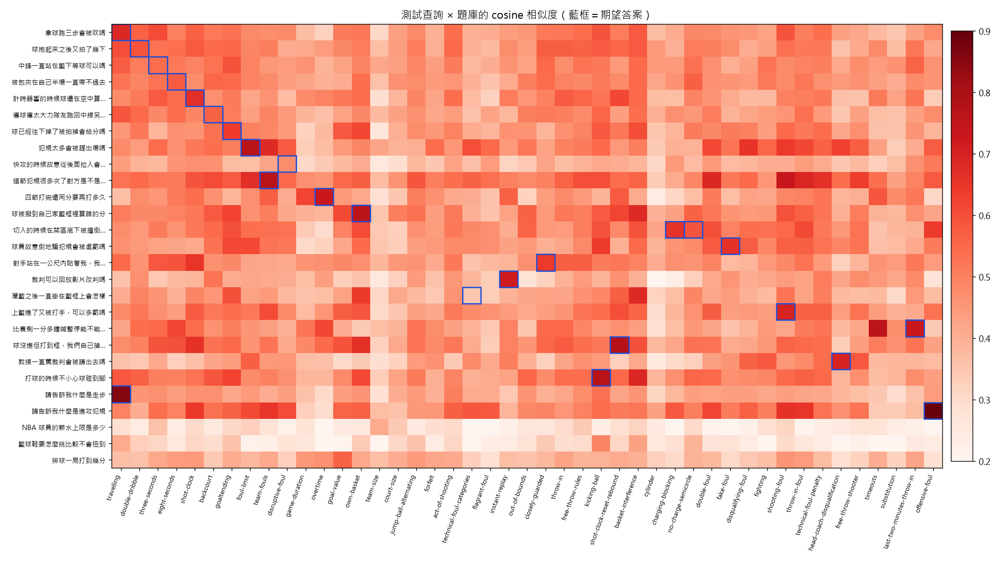

做了什麼
看籃球比賽常會想問「拿球跑三步會被吹嗎」「快攻從後面拉人怎麼判」，但規則書是英文、條文很長， 而且 2026 年 FIBA 改了不少規則（例如取消 unsportsmanlike foul）。這個專案自建 45 題 FIBA 2026 規則問答， 讓使用者用口語提問，程式找出最相關的題目並附上條號。
- 口語問題
- →
- embedding
qwen3-embedding:0.6b - →
- cosine 相似度取 top-3
- →
- 低於門檻 0.50 → 拒答
- →
- 結構化回答
qwen3:1.7b ＋ Pydantic - →
- guard 檢查出處
用到的模型能力
- Embedding：把題庫（問題＋別名＋答案）和使用者問題轉成向量，用 cosine 相似度找最接近的 3 題；最高分低於門檻就回「題庫沒有相關規則」。
- 結構化輸出：把 top-3 交給
qwen3:1.7b，用chat.completions.parse搭配 Pydantic，輸出answer、source_ids、confidence三個欄位。 - 程式端 guard：出處只能是 top-3 的 id、回答不超過 100 字、不能只寫 id、信心「低」改成拒答；沒通過就改顯示人工審核過的題庫答案。
題庫
45 題，全部對照 FIBA 2026 v1.1 規則書核對過（status: verified），答案用自己的話寫、每題附條號。
分類：違例 14、比賽基本 8、犯規 8、罰則 7、2026 新制 5、比賽管理 3。
技術
Python 3.12（uv）· 本地 Ollama（Docker）· OpenAI 相容 API · numpy · Pydantic · pytest／ruff · GitHub Actions（CI ＋ Pages）· Dockerfile／compose
怎麼執行
以下是 Windows PowerShell 指令；需要先裝 uv、Git、Docker Desktop。
1. 下載專案、安裝套件
git clone https://github.com/kdwjzh/fiba-rules-faq.git
cd fiba-rules-faq
uv sync
Copy-Item .env.example .env2. 啟動 Ollama、下載模型
docker volume create ollama
docker compose up -d ollama
docker compose exec ollama ollama pull qwen3-embedding:0.6b
docker compose exec ollama ollama pull qwen3:1.7b3. 建索引、查詢
uv run python -m faq.build_index
uv run python -m faq.ask "拿球走三步會怎樣"
uv run python -m faq.answer "請告訴我什麼是進攻犯規"faq.ask 只做檢索（列出 top-3 與分數）；faq.answer 再用模型產生結構化回答，每題約 10–25 秒。
4. 產生這頁的執行結果、跑測試
uv run python -m faq.report --answers
uv run ruff check .
uv run pytest -q也可以全部在容器裡跑
docker compose run --rm app faq.build_index
docker compose run --rm app faq.answer "快攻從後面拉人會怎麼判"Dockerfile 是 multi-stage，執行階段以非 root 使用者執行；測試不呼叫模型，CI 每次 push 都會跑 ruff 和 pytest。
執行結果
讀取 data/results.json 中…
整體指標
Hit@1：第 1 名就是期望的題目；Hit@3：期望題目在前 3 名內。題庫外查詢（例如「NBA 球員薪水上限」）用來測拒答門檻。
相似度熱圖
每一列是一條測試查詢，每一欄是題庫的一題，越紅越相似；藍框是期望答案。

每條測試查詢的檢索結果
模型回答範例
已知限制
- 題庫外的問題如果用到籃球字眼（「排球一局打到幾分」），相似度可能過門檻，模型也照答。門檻再拉高會誤拒題庫內的口語問題。
qwen3:1.7b對口語問法的理解有限：會引用錯的題目、把撞人和阻擋講反；guard 只能擋格式（出處、字數），擋不住內容錯誤。- 保留模型的思考模式，每題約 10–25 秒；關掉後只要 1–2 秒，但引用正確率較低，還會加入題庫以外的內容。
- 同樣的設定每次跑，模型回答會有些微差異。
AI 使用說明
開發時使用 Claude Code（Anthropic，模型 Claude Opus 5.5）輔助。 題庫答案由 Claude Code 讀規則書後起草，一律先標 draft，由我對照 FIBA 規則書 PDF 核對後才改成 verified。 完整紀錄在 docs/ai-usage-log.md。
| 用了什麼工具 | 用在哪裡 | 我自己修改或驗證了什麼 |
|---|---|---|
| Claude Code | 建 repo、.gitignore、GitHub Actions（CI、Pages 部署） |
自己建立 Public repo；第一次 push 認證失敗，改用瀏覽器登入 GitHub 授權；Pages 第一次部署失敗是因為 repo 還空著時設定沒存到，重新設定 Source 並手動 Run workflow 後確認綠燈；檢查 .gitignore 有排除 .env |
| Claude Code | 環境（uv、Docker、Ollama） | 電腦上沒有 uv，選擇讓它用 winget 安裝；沒有 Docker 時，選擇自己安裝 WSL 2 和 Docker Desktop，照課程環境做，不改用 Windows 版 Ollama |
| Claude Code | 起草題庫 45 題（讀規則書、整理條號、用自己的話寫答案） | 對照 FIBA 2026 v1.1 規則書逐題核對答案與條號後才改成 verified；同意重播那題出處寫成 Appendix F；核對時確認 throw-in-foul 原本漏了「最後 2 分鐘」條件，這題我第一次審核時也沒發現 |
| Claude Code | 程式：store、llm（改自課程 Lab 5）、build_index、ask、answer、report、測試 |
同意拒答改由檢索門檻決定、保留思考模式（較慢但較準）；自己用 faq.answer 試問，發現「什麼是走步」沒有解釋名詞、「什麼是進攻犯規」完全答錯，回報後請它補定義句、新增進攻犯規題目、去掉回答開頭的 id，修正後重跑都答對 |
| Claude Code | 評估報告、熱圖、Dockerfile／compose | 決定不做本地 vs 雲端比較表，加分項改靠 Dockerfile／compose 和 CI 跑 pytest |
| Ollama：qwen3-embedding:0.6b、qwen3:1.7b | 程式本身用到的模型（embedding、結構化回答） | 用 27 條自己設計的口語測試查詢評估（上方「執行結果」），依結果調整門檻與 prompt |
AI 或舊資料寫錯、被抓出來的地方
- throw-in foul：AI 起草時寫成「發界外球時的犯規只罰 1 球」，漏掉 Art. 34.1.2 的條件（只限第四節和延長賽最後 2 分鐘）。
- 無衝撞區半徑：AI 起草時寫成 1.25 公尺，規則書 Art. 2.5.7 是 1.30 公尺。
- 技術犯規罰球人選：AI 起草時寫「任何隊員都可以罰」，Art. 44.2.2 是由對方總教練指定。
- 條號：舊資料常說五次犯規是 Art. 40，2026 版是 Art. 41（Art. 40 變成 Fighting）。
- 犯規名稱：2026 版已取消 unsportsmanlike foul，改成 disruptive foul 和 flagrant foul；題庫測試會檢查答案不能把舊名稱當成現行規則。
- 模型輸出：
qwen3:1.7b曾把 prompt 裡的id: travelling整段抄進出處、把整段 FAQ 原文貼進回答，都被 guard 擋下，之後改了 prompt 格式並加上字數檢查。
參考資料
- FIBA Official Basketball Rules 2026（v1.1，2026-10-01 生效）
- FIBA 2026 規則修改摘要
- Qwen3-Embedding（查詢加任務說明的做法）
- 課程「設計機器學習平台與系統架構」第 4–7 週講義與 Lab 4、Lab 5 範例程式
- 本專案 GitHub repo